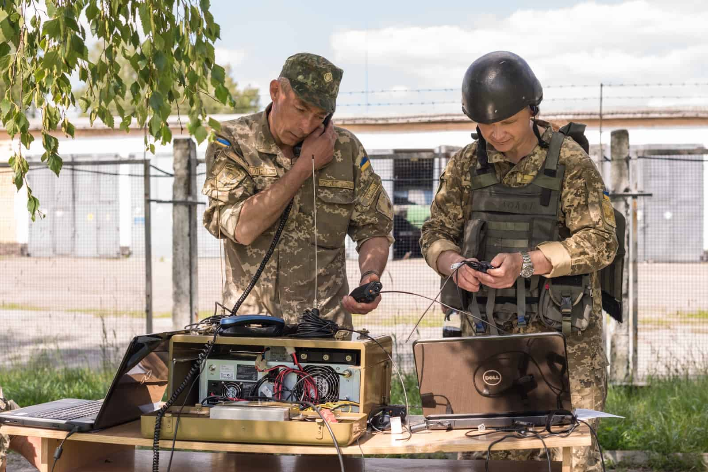
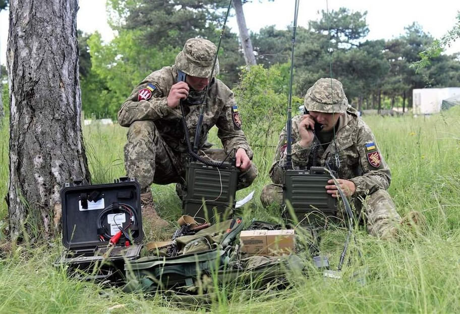
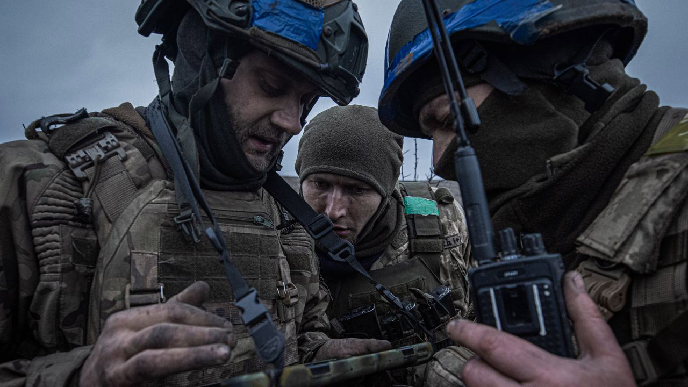
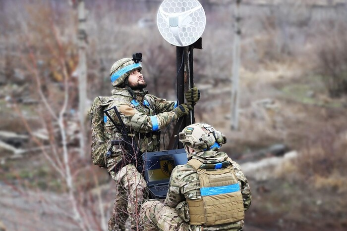

Новітні радіостанції з підвищеною дальністю зв’язку
У нашому асортименті з’явилися сучасні портативні радіостанції, здатні забезпечувати зв’язок на відстані до 50 км навіть у складних умовах. Завдяки передовій технології шумозаглушення та тривалому часу автономної роботи, ці пристрої ідеально підходять для військових і рятувальних операцій. Дізнайтеся більше про новинку у розділі "Продукція".

Відкриття нового центру технічної підтримки
Раді повідомити, що наша компанія відкрила новий центр технічної підтримки в Києві. Клієнти зможуть отримати консультації, обслуговування та модернізацію своїх засобів зв’язку на сучасному обладнанні. Ми прагнемо бути ближчими до вас, забезпечуючи швидке і якісне обслуговування.

Співпраця з міжнародними партнерами
Наша компанія уклала угоду про співпрацю з провідним виробником супутникового обладнання. Це дозволить нам інтегрувати передові технології в наші рішення для зв’язку в найвіддаленіших куточках світу. Нові продукти будуть доступні вже з наступного кварталу.

Успішне тестування системи шифрованого зв’язку
Нещодавно ми провели випробування нової системи шифрованого зв’язку, яка відповідає найвищим стандартам безпеки. Результати підтвердили надійність та стійкість системи до зломів. Ця технологія ідеально підходить для урядових організацій та бізнесу, які потребують максимального захисту даних.